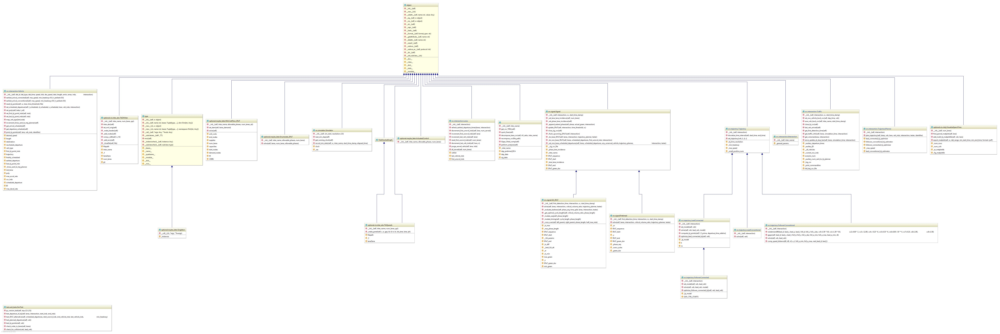

1.1. Introduction
The program is to simulate the performance of an isolated intersection under traffic of automated vehicles and conventional vehicles with variety of signal control methods. It is developed as part of the AVIAN project supported by National Science Foundation under grant award 1446813. The base implementation was done in MATLAB programming language in 2015 - 2017.
Coded by: Mahmoud Pourmehrab (mpourmehrab@ufl.edu)
Visit the project website here
Note
- The Python requirement is set to
3.5.2
- Install packages using
pip3 install -r requirements.txt
- SI units used (speed in \(m/s\), length in \(m\), time in \(s\), acceleration in \(m/s^2\))
- Run
python main <intersection_name> <optimization_algo> <run mode>
- The printed information in the command line may have the following prefixes:
>>> phase addition to the end of SPaT<<< phase removal to the beginning of SPaT>-> phase extension (only can happen to the last phase)\\\ vehicle addition/// vehicle removal>@> vehicle departure scheduled
- Outputs are stored under
\log:
<intersection name>_vehicle_level includes input csv plus the departure time, vehicle ID and elapsed time columns<intersection name>_trj_point_level.csv includes the trajectory points
Warning
- As of now, no traffic generator module is developed as part of the main workflow. The traffic is input in csv format under
data directory.
- For simulation, the directory
\data\ shall include <intersection name>.csv which has the scenarios to be tested. Note the filename should match the intersection name.
- The csv file must include columns with the following heading:
- lane: lane index (one-based)
- type: vehicle type {0: CNV, 1: CAV}
- arrival time: arrival time at the stop bar measured in second from a fix reference point
- curSpd: detection speed
- dist: detection distance
- desSpd: desired speed
- dest: destination {0: right turn, 1: through, 2: left}
- L: length of vehicle
- maxDec: maximum deceleration rate vehicle can execute
- maxAcc: maximum acceleration rate vehicle can execute
- You can add any intersection in the
src/intersection/data.py. The list of all available intersections is:
13th16th: A physical one, google map it in Gainesville for the image and lane assignment detailTERL: Located at 2612 Springhill Road, Tallahassee, FL 32305. Note the lane numbering in the code is 1: Southbound (all movements), 2: Westbound (through and right turn), 3: Westbound (left turn), 4: Northbound (all movements), 5: Eastbound (through and right turn), 6: Eastbound (left turn).reserv: for the reservation based model intersection that has 12 incoming lanes: 3 per approach and all lanes are exclusive (for more detail check here).- Some possible intersections to add are
RTS, 42nd40th, SolarPark
- You also can choose from the following signal control methods:
GApretimedMCF (under development)actuated (under development)
- You can run in either of the following modes (pay attention to the requirements of each run mode):
-
For example, to simulate intersection of 13th and 16th in Gainesville with GA, invoke:
>>> python 13th16th GA simulation
The UML diagram of the project is as the following (you may want to zoom in):

1.3. Main Script
The main.py file implements the following work flow:
-
main.check_py_ver()
checks the python version to meet the requirement (ver 3.5.2)
-
main.run_avian(inter_name, method, sc, do_traj_computation, log_at_vehicle_level, log_at_trj_point_level, print_clock, print_signal_detail, print_trj_info, test_time, print_detection, print_departure)
- For logging and printing of information set boolean variables:
log_at_trj_point_level saves a csv under \log directory that contains all trajectory points for all vehicleslog_at_vehicle_level saves a csv file under \log directory that contains departure times and elapsed times and vehicle IDs
- The work flow is as the following:
- Tests for python version
- Checks the input arguments to be valid
- Instantiate:
-
- set simulation start time to when first vehicle shows up
-
- main loop stops only when all vehicles in the provided input traffic csv file are assigned a departure time.
- remove vehicles that are served
- update SPaT
- update vehicle information (includes addition too)
- do signal
- plan trajectories
- update time and check of termination
| Parameters: |
- inter_name (str) – intersection name
- method (str) – pretimed, GA, …
- sc (int) – scenario number (should match the appendix of the input csv filename)
- do_traj_computation –
- log_at_vehicle_level –
- log_at_trj_point_level –
- print_clock – prints the simulation clock
- print_signal_detail –
- print_trj_info –
- test_time – in seconds from start of simulation
|
|---|
| Author: | Mahmoud Pourmehrab <pourmehrab@gmail.com>
|
|---|
| Date: | April-2018
|
|---|
| Organization: | University of Florida
|
|---|